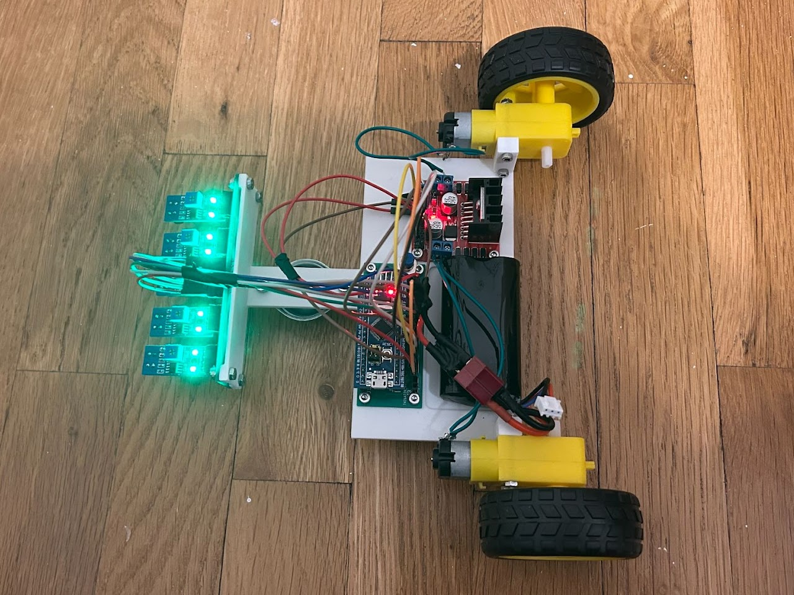
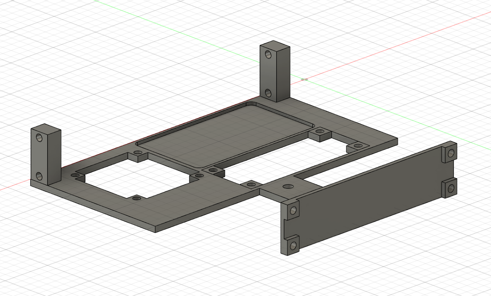
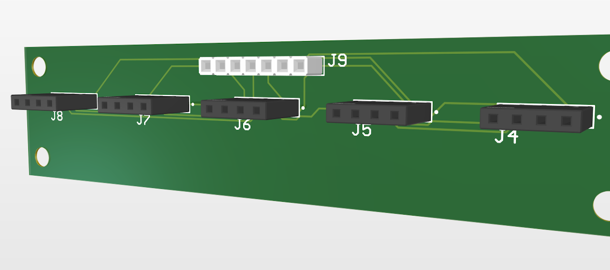
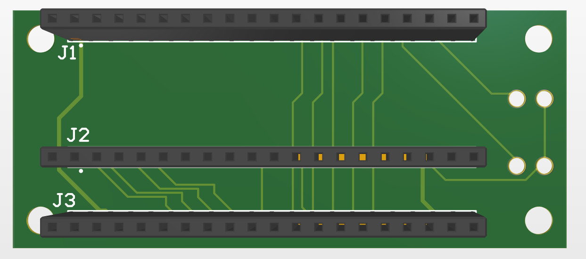

Line-Follower Robot
Capable of following tracks with turns up to 90° with an average speed of 30 cm/s and lateral deviation of 2 cm on straight segments.

Technical Skills
- Processing data from multiple channels of an analog-to-digital converter (ADC). This was done when I measured the analog readings of the five IR sensors over the line, which was later stored in a buffer.
- Designing a PID control system. Performed multiple tests to fine-tune the PID gains (sensitivity of the robot), which also taught me what the effects of changing each gain were (i.e., increasing the derivative gain too much would lead to excessive oscillations about a straight line).
- Creating printed circuit boards (PCB). While I had past experience with Altium Designer making schematics, I had never used schematics to create PCBs and order them online. I also learned how to design the board shape outline with Fusion360 so the PCBs would properly fit on the robot.
Non-Technical Skills
The most important lesson I learned from this project is that I need to be more conscious of design choices. Many of the elements in my first design did not help my robot navigate tracks with corners quickly, and some aspects of the design even worked against this, such as the large size and sensor placement.
My mistake with the first design was that my main priority was how I could place components together closely rather than focusing on the goal of optimizing performance.
My second design was much closer to meeting my goal, but the sensor placement was still an issue. In my first design, the sensors were too close to the wheels and too far from the ground, while the opposite was true for my second design.
I fixed these issues in my third and final design, and I ultimately learned that every aspect of a design should be a result of conscious choice and not by coincidence.
CAD Models



Parts
- STM32F103C8T6
- DC motors with wheels
- L298N motor driver
- Infrared sensors
- 7.4V LIPO battery